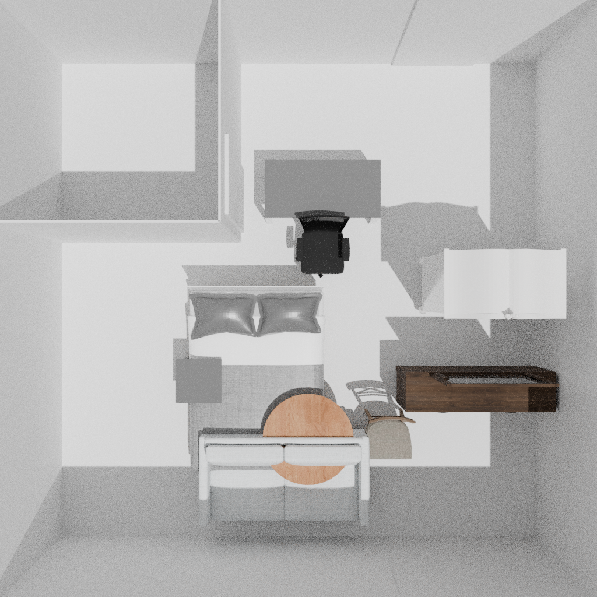
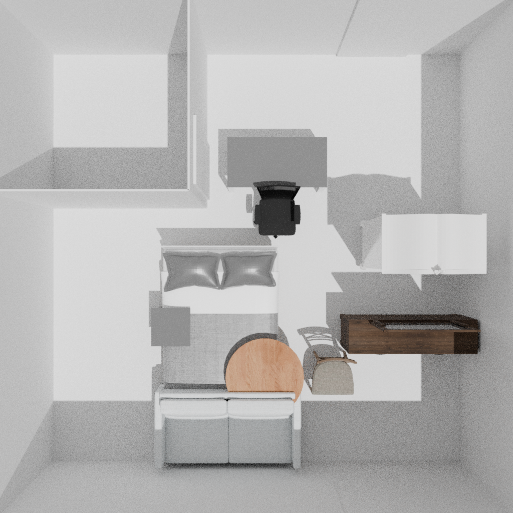

2026-11-10 直接查询远端：main 531bd1a，研究分支 runs/920 75fc783，与11月9日审阅一致。未登录920、未重训；其未公开的最终适配器与评测仍不可得。AutoDL 新分支从 main 建立，不改旧分支。
当前已经有真实训练、原生编辑和可审计终态，仍缺少“专业知识改善可用设计决策”的稳定证据。接口正确、动作成功、局部活动达标、完整房间成功是不同层次。现在最值得投入的是一项能区分普通方法与候选机制的有限实验，而不是自动增加训练规模。
| Git 已完成证据 | 结果 | 判断 |
|---|---|---|
| EVALFIX | 底座/动作/理由＋动作各4终态；活动通过3/4、2/4、2/4；达标且不新增损害均0/4。 | 训练组没有显示稳定优于同知识底座。 |
| MATCHEDROLL | 一个训练曝光项目；三组对两个缺口起点均0/2成功。已合格起点保持并正确结束为底座1/2、动作1/2、联合2/2。 | 只有保持状态的局部信号；不能当独立项目泛化。11/12轨迹受停止/解析差异影响。 |
| LEARN | 真实启动与5次反向计算回执；没有最终训练、适配器绑定、门槛及开发评测结果。 | 旧 running 字段不证明现在仍运行，也不授权重复训练。 |
本轮从逐轨迹 SUMMARY.json 再汇总 MATCHEDROLL，与既有审计一致；EVALFIX 逐行 CSV 与前次重算一致。没有重跑920物理引擎或模型。本次远端、权重与重算记录。
最新两臂是 action_only 与 paired，后者多1332个理由目标token；同材料 separate 条件虽已准备，未纳入这轮。因此即使 paired 胜出，首先支持的是附加理由监督有帮助，不能独立识别配对方式的贡献。来源材料为6项目族、24动作组件、8理由位置与5条原则；带出处的研究者重建不等于24条独立设计师历史决定。
Scene-Designer已有Observation–Thought–Action、Critic及反馈优化；Function2Scene已有用途约束、工具检查和修复；RenoLayout已有前后设计对与设计点监督。用途、专业经验、理由或评分模块单独都不足以区分贡献。建议保留的候选问题是：相同信息、操作权限及计算预算下，模型能否根据具体用途预判动作对多项功能的收益和损害，从而减少试错并保留其他功能。候选后果预测器尚未实现或训练，当前不能宣称新颖性成立。
Waterloo公开状态可读取，本地存在原始沙发HSSD网格，桌凳小网格也在Git；缺的是原运行所需完整原生检查点/SDF封装。没有把“有几个网格”当成可精确恢复整场。因此使用已授权的巴黎回退：同一个既有家具终态，分别保持不动及回放先前普通搜索选出的单次移动。没有新的模型动作，没有再搜索或选择新候选。
A允许饭前收起工作材料，B要求工作材料吃饭期间原位保留。只检验80×50cm工作面和60×40cm用餐面的零厚度矩形区域；A的收纳是否可用、人的坐姿/接近等均未知。这是研究者构造的条件变体，不能视为独立人类偏好标签。
| 固定候选 | 家具保留 | 相交对 | A分时平面条件 | B同时平面条件 | 完整房间 |
|---|---|---|---|---|---|
| keep | 9，删除0 | 5 | witness | not_found | 未验证 |
| ordinary_reference | 9，删除0 | 4 | witness | witness | 未验证 |
普通移动消除1对相交，无新增相交、越界、墙门窗相交；保留原建筑及所有对象ID/资产。仍有4对家具相交，底面与房间地板参考还有2cm差异。有限搜索未找到见证不等于数学不可行；找到平面见证也不等于完整活动成功。
这个例子已有普通几何解法，不能作为学习型后果预测器的正面证据。普通参考候选是在旧实验中选出的，不是新预注册方法成绩。同一终态可以在两种用途条件下都通过局部检查，不能为了得到“反转”而制造相反标签。
两次原生终态GLB与各自旧终态逐字节哈希相同；本次重新执行原生放置及FCL/台面测量，五视图则复用经场景哈希绑定的既有渲染，未冒称新渲染。21个旧源文件/几何前后哈希一致。完整GLB本地保存，Git只提交小证据与视图。逐项结果 · CSV · 源文件保留


首次外层控制进程exit137，原因未确认。两次原生执行已保存终态与内部回执；只续做第二个已保存终态的评价，没有重跑动作。保持分支dispatch墙钟36.63秒、网格子进程13.39秒、测量绑定10.70秒；移动分支内部dispatch27.09秒、内部网格7.67秒、测量绑定5.90秒。后者未取得完整原外层墙钟，不能把这些数字相加当整个作业总时长。异常原始记录。
CPU准备实际通过：5张图，输入3258 token；只加载processor，峰值RSS 764.3 MiB，26.32秒，0模型前向、0网络连接、0付费API。现有四分片权重大小及7小配置哈希核对通过，大权重未重复全量哈希。
当前AutoDL为2GiB内存、0.5核、无NVIDIA设备。下一真实模型轨迹的配置建议为整套V100 32GB＋24GiB系统内存＋4核，至少26GiB空闲显存；这是保守门槛，不是测得最低值。V100用FP16和现有SDPA适配，不承诺BF16。每次模型子进程200秒、全轨迹模型子进程累计1200秒上限，基础设施失败不自动重试。尚未执行GPU分支或多步后续渲染，不能把输入校验称作全流程已验收。
权重、网格不上传。派生视图来自获许可HSSD，署名及非商业范围见本目录NOTICE.txt。没有调用模型API、训练或新建计费实例。本轮仅定向复核下列论文方法，不宣称全文排重。